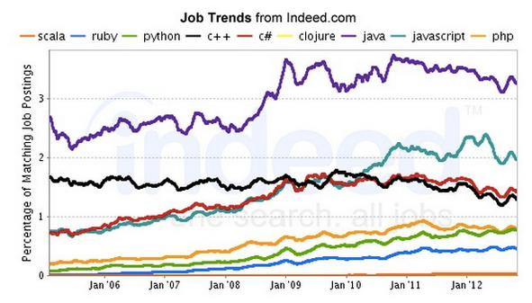

C++ Tutorial
- 140 Google Interview Questions - 2017

Top 10 employers 2012, Data: http://www.payscale.com/top-tech-employers-compared-2012/pay
Who's getting hired 2012, Data: http://www.payscale.com/top-tech-employers-compared-2012/pay

Indeed.com's job post charts - percentage of job openings
Interview Questions
Note:
Answers for these questions are scattered around my tutorial. It will be published in an organized manner, soon.
Here are the answers to the questions from other interviewers including Google:
Google Interview Questions: Product Marketing Manager
- Why do you want to join Google?
- What do you know about Google's product and technology?
- If you are Product Manager for Google's Adwords, how do you plan to market this?
- What would you say during an AdWords or AdSense product seminar?
- Who are Google's competitors, and how does Google compete with them?
- Have you ever used Google's products? Gmail?
- What's a creative way of marketing Google's brand name and product?
- If you are the product marketing manager for Google's Gmail product, how do you plan to market it so as to achieve 100 million customers in 6 months?
- How much money you think Google makes daily from Gmail ads?
- Name a piece of technology you've read about recently.
Now tell me your own creative execution for an ad for that product. - Say an advertiser makes $0.10 every time someone clicks on their ad.
Only 20% of people who visit the site click on their ad.
How many people need to visit the site for the advertiser to make $20? - Estimate the number of students who are college seniors, attend four-year schools, and graduate with a job in the United States every year.
The PayScale Index (US): Trends in Compensation 2012, Data: http://www.payscale.com/top-tech-employers-compared-2012/pay
Google Interview Questions: Product Manager
- How would you boost the GMail subscription base?
- What is the most efficient way to sort a million integers?
- How would you re-position Google's offerings to counteract competitive threats from Microsoft?
- How many golf balls can fit in a school bus?
- You are shrunk to the height of a nickel and your mass is proportionally reduced so as to maintain your original density. You are then thrown into an empty glass blender. The blades will start moving in 60 seconds.
What do you do? - How much should you charge to wash all the windows in Seattle?
- How would you find out if a machine's stack grows up or down in memory?
- Explain a database in three sentences to your eight-year-old nephew.
- How many times a day does a clock's hands overlap?
- You have to get from point A to point B. You don't know if you can get there.
What would you do? - Imagine you have a closet full of shirts. It's very hard to find a shirt.
So what can you do to organize your shirts for easy retrieval? - Every man in a village of 100 married couples has cheated on his wife.
Every wife in the village instantly knows when a man other than her husband has cheated, but does not know when her own husband has.
The village has a law that does not allow for adultery.
Any wife who can prove that her husband is unfaithful must kill him that very day.
The women of the village would never disobey this law.
One day, the queen of the village visits and announces that at least one husband has been unfaithful.
What happens? - In a country in which people only want boys, every family continues to have children until they have a boy.
If they have a girl, they have another child.
If they have a boy, they stop. What is the proportion of boys to girls in the country? - If the probability of observing a car in 30 minutes on a highway is 0.95, what is the probability of observing a car in 10 minutes (assuming constant default probability)?
- If you look at a clock and the time is 3:15, what is the angle between the hour and the minute hands? (The answer to this is not zero!)
- Four people need to cross a rickety rope bridge to get back to their camp at night.
Unfortunately, they only have one flashlight and it only has enough light left for seventeen minutes.
The bridge is too dangerous to cross without a flashlight, and it's only strong enough to support two people at any given time.
Each of the campers walks at a different speed.
One can cross the bridge in 1 minute, another in 2 minutes, the third in 5 minutes, and the slow poke takes 10 minutes to cross.
How do the campers make it across in 17 minutes? - You are at a party with a friend and 10 people are present including you and the friend.
Your friend makes you a wager that for every person you find that has the same birthday as you, you get $1; for every person he finds that does not have the same birthday as you, he gets $2.
Would you accept the wager? - How many piano tuners are there in the entire world?
- You have eight balls all of the same size. 7 of them weigh the same, and one of them weighs slightly more.
How can you find the ball that is heavier by using a balance and only two weighings? - You have five pirates, ranked from 5 to 1 in descending order.
The top pirate has the right to propose how 100 gold coins should be divided among them.
But the others get to vote on his plan, and if fewer than half agree with him, he gets killed.
How should he allocate the gold in order to maximize his share but live to enjoy it?
(Hint: One pirate ends up with 98 percent of the gold.) - You are given 2 eggs. You have access to a 100-story building.
Eggs can be very hard or very fragile means it may break if dropped from the first floor or may not even break if dropped from 100th floor.
Both eggs are identical. You need to figure out the highest floor of a 100-story building an egg can be dropped without breaking.
The question is how many drops you need to make.
You are allowed to break 2 eggs in the process. - Describe a technical problem you had and how you solved it.
- How would you design a simple search engine?
- Design an evacuation plan for San Francisco.
- There's a latency problem in South Africa. Diagnose it.
- What are three long term challenges facing Google?
- Name three non-Google websites that you visit often and like.
What do you like about the user interface and design?
Choose one of the three sites and comment on what new feature or project you would work on.
How would you design it? - If there is only one elevator in the building, how would you change the design?
How about if there are only two elevators in the building? - How many vacuums are made per year in USA?
Employee Demographics 2012, Data: http://www.payscale.com/top-tech-employers-compared-2012/pay
Google Interview Questions: Software Engineer
- Why are manhole covers round?
- What is the difference between a mutex and a semaphore?
Which one would you use to protect access to an increment operation? - A man pushed his car to a hotel and lost his fortune. What happened?
- Explain the significance of "dead beef".
- Write a C program which measures the speed of a context switch on a UNIX/Linux system.
- Given a function which produces a random integer in the range 1 to 5, write a function which produces a random integer in the range 1 to 7.
- Describe the algorithm for a depth-first graph traversal.
- Design a class library for writing card games.
- You need to check that your friend, Bob, has your correct phone number, but you cannot ask him directly.
You must write a question on a card which and give it to Eve who will take the card to Bob and return the answer to you.
What must you write on the card, besides the question, to ensure Bob can encode the message so that Eve cannot read your phone number? - How are cookies passed in the HTTP protocol?
- Design the SQL database tables for a car rental database.
- Write a regular expression which matches an email address.
- Write a function f(a, b) which takes two character string arguments and returns a string containing only the characters found in both strings in the order of a.
Write a version which is order N-squared and one which is order N. - You are given a source to an application which is crashing when run.
After running it 10 times in a debugger, you find it never crashes in the same place.
The application is single threaded, and uses only the C standard library.
What programming errors could be causing this crash?
How would you test each one? - Explain how congestion control works in the TCP protocol.
- In Java, what is the difference between final, finally, and finalize?
- What is multithreaded programming? What is a deadlock?
- Given a series A,B,C .......Z, AA, AB,AC,AD....AZ,BA,BB...BZ,CA....(Open excel sheet. The names of column represent the series). Given input as number 'n'. Output the 'n' th string of the series. & also vice versa if given string prints its corrsponding string...e.g given AC then its interger is 29 & given 40774 its string value is ABZ..
- You have a stream of infinite queries (i.e., real time Google search queries that people are entering).
Describe how you would go about finding a good estimate of 1000 samples from this never ending set of data and then write code for it. - Tree search algorithms.
Write BFS and DFS code, explain run time and space requirements.
Modify the code to handle trees with weighted edges and loops with BFS and DFS, make the code print out path to goal state. - You are given a list of numbers.
When you reach the end of the list you will come back to the beginning of the list (a circular list).
Write the most efficient algorithm to find the minimum # in this list.
Find any given # in the list.
The numbers in the list are always increasing but you don't know where the circular list begins, i. e., 38, 40, 55, 89, 6, 13, 20, 23, 36. - Describe the data structure that is used to manage memory. (stack)
- What's the difference between local and global variables?
- If you have 1 million integers, how would you sort them efficiently?
(modify a specific sorting algorithm to solve this) - In Java, what is the difference between static, final, and const.
(if you don't know Java they will ask something similar for C or C++). - Talk about your class projects or work projects
(pick something easy)... then describe how you could make them more efficient (in terms of algorithms). - Suppose you have an NxN matrix of positive and negative integers.
Write some code that finds the sub-matrix with the maximum sum of its elements. - Write some code to reverse a string.
- Implement division (without using the divide operator, obviously).
- Write some code to find all permutations of the letters in a particular string.
- What method would you use to look up a word in a dictionary?
- Imagine you have a closet full of shirts.
It's very hard to find a shirt. So what can you do to organize your shirts for easy retrieval? - You have eight balls all of the same size. 7 of them weigh the same, and one of them weighs slightly more. How can you fine the ball that is heavier by using a balance and only two weighings?
- What is the C-language command for opening a connection with a foreign host over the internet?
- Design and describe a system/application that will most efficiently produce a report of the top 1 million Google search requests. These are the particulars:
1) You are given 12 servers to work with. They are all dual-processor machines with 4Gb of RAM, 4x400GB hard drives and networked together.(Basically, nothing more than high-end PC's)
2) The log data has already been cleaned for you. It consists of 100 Billion log lines, broken down into 12 320 GB files of 40-byte search terms per line.
3) You can use only custom written applications or available free open-source software. - There is an array A[N] of N numbers.
You have to compose an array Output[N] such that Output[i] will be equal to multiplication of all the elements of A[N] except A[i].
For example Output[0] will be multiplication of A[1] to A[N-1] and Output[1] will be multiplication of A[0] and from A[2] to A[N-1]. Solve it without division operator and in O(N). - There is a linked list of numbers of length N.
N is very large and you don't know N.
You have to write a function that will return k random numbers from the list.
Numbers should be completely random.
Hint: 1. Use random function rand() (returns a number between 0 and 1) and irand() (return either 0 or 1)
2. It should be done in O(N). - Find or determine non existence of a number in a sorted list of N numbers where the numbers range over M, M>> N and N large enough to span multiple disks.
Algorithm to beat O(log n) bonus points for constant time algorithm. - You are given a game of Tic Tac Toe.
You have to write a function in which you pass the whole game and name of a player.
The function will return whether the player has won the game or not.
First you to decide which data structure you will use for the game.
You need to tell the algorithm first and then need to write the code.
Note: Some position may be blank in the game? So your data structure should consider this condition also. - You are given an array [a1 To an] and we have to construct another array [b1 To bn] where bi = a1*a2*...*an/ai. you are allowed to use only constant space and the time complexity is O(n). No divisions are allowed.
- How do you put a Binary Search Tree in an array in an efficient manner.
Hint :: If the node is stored at the ith position and its children are at 2i and 2i+1(I mean level order wise).
It's not the most efficient way. - How do you find out the fifth maximum element in a Binary Search Tree in efficient manner.
Note: You should not use any extra space. i.e., sorting Binary Search Tree and storing the results in an array and listing out the fifth element. - Given a Data Structure having first n integers and next n chars. A = i1 i2 i3 ... iN c1 c2 c3 ... cN.
Write an in-place algorithm to rearrange the elements of the array ass A = i1 c1 i2 c2 ... in cn - Given two sequences of items, find the items whose absolute number increases or decreases the most when comparing one sequence with the other by reading the sequence only once.
- Given That One of the strings is very very long , and the other one could be of various sizes.
Windowing will result in O(N+M) solution but could it be better?
May be NlogM or even better? - How many lines can be drawn in a 2D plane such that they are equidistant from 3 non-collinear points?
- Let's say you have to construct Google maps from scratch and guide a person standing on Gateway of India (Mumbai) to India Gate(Delhi). How do you do the same?
- Given that you have one string of length N and M small strings of length L.
How do you efficiently find the occurrence of each small string in the larger one? - Given a binary tree, programmatically you need to prove it is a binary search tree.
- You are given a small sorted list of numbers, and a very very long sorted list of numbers - so long that it had to be put on a disk in different blocks.
How would you find those short list numbers in the bigger one? - Suppose you have given N companies, and we want to eventually merge them into one big company.
How many ways are there to merge? - Given a file of 4 billion 32-bit integers, how to find one that appears at least twice?
- Write a program for displaying the ten most frequent words in a file such that your program should be efficient in all complexity measures.
- Design a stack. We want to push, pop, and also, retrieve the minimum element in constant time.
- Given a set of coin denominators, find the minimum number of coins to give a certain amount of change.
- Given an array,
i) find the longest continuous increasing subsequence.
ii) find the longest increasing subsequence. - Suppose we have N companies, and we want to eventually merge them into one big company.
How many ways are there to merge? - Write a function to find the middle node of a single link list.
- Given two binary trees, write a compare function to check if they are equal or not. Being equal means that they have the same value and same structure.
- Implement put/get methods of a fixed size cache with LRU replacement algorithm.
- You are given with three sorted arrays ( in ascending order), you are required to find a triplet ( one element from each array) such that distance is minimum.
- Distance is defined like this :
If a[i], b[j] and c[k] are three elements then distance=max(abs(a[i]-b[j]),abs(a[i]-c[k]),abs(b[j]-c[k]))"
Please give a solution in O(n) time complexity - How does C++ deal with constructors and destructors of a class and its child class?
- Write a function that flips the bits inside a byte (either in C++ or Java).
Write an algorithm that take a list of n words, and an integer m, and retrieves the mth most frequent word in that list. - What's 2 to the power of 64?
- Given that you have one string of length N and M small strings of length L.
How do you efficiently find the occurrence of each small string in the larger one? - How do you find out the fifth maximum element in an Binary Search Tree in efficient manner.
- Suppose we have N companies, and we want to eventually merge them into one big company.
How many ways are there to merge? - There is linked list of millions of node and you do not know the length of it.
Write a function which will return a random number from the list. - You need to check that your friend, Bob, has your correct phone number, but you cannot ask him directly.
You must write a question on a card which and give it to Eve who will take the card to Bob and return the answer to you.
What must you write on the card, besides the question, to ensure Bob can encode the message so that Eve cannot read your phone number? - How long it would take to sort 1 trillion numbers? Come up with a good estimate.
- Order the functions in order of their asymptotic performance:
1) 2^n 2) n^100 3) n! 4) n^n - There are some data represented by(x,y,z).
Now we want to find the Kth least data. We say (x1, y1, z1) > (x2, y2, z2) when value(x1, y1, z1) > value(x2, y2, z2) where value(x,y,z) = (2^x)*(3^y)*(5^z).
Now we cannot get it by calculating value(x,y,z) or through other indirect calculations as lg(value(x,y,z)).
How to solve it? - How many degrees are there in the angle between the hour and minute hands of a clock when the time is a quarter past three?
- Given an array whose elements are sorted, return the index of the first occurrence of a specific integer.
Do this in sub-linear time. I.e. do not just go through each element searching for that element. - Given two linked lists, return the intersection of the two lists: i.e. return a list containing only the elements that occur in both of the input lists.
- What's the difference between a hashtable and a hashmap?
- If a person dials a sequence of numbers on the telephone, what possible words/strings can be formed from the letters associated with those numbers?
- How would you reverse the image on an n by n matrix where each pixel is represented by a bit?
- Create a fast cached storage mechanism that, given a limitation on the amount of cache memory, will ensure that only the least recently used items are discarded when the cache memory is reached when inserting a new item.
It supports 2 functions: String get(T t) and void put(String k, T t). - Create a cost model that allows Google to make purchasing decisions on to compare the cost of purchasing more RAM memory for their servers vs. buying more disk space.
- Design an algorithm to play a game of Frogger and then code the solution.
The object of the game is to direct a frog to avoid cars while crossing a busy road.
You may represent a road lane via an array.
Generalize the solution for an N-lane road. - What sort would you use if you had a large data set on disk and a small amount of ram to work with?
- What sort would you use if you required tight max time bounds and wanted highly regular performance.
- How would you store 1 million phone numbers?
- Design a 2D dungeon crawling game. It must allow for various items in the maze - walls, objects, and computer-controlled characters.
(The focus was on the class structures, and how to optimize the experience for the user as s/he travels through the dungeon.) - What is the size of the C structure below on a 32-bit system? On a 64-bit?
struct foo { char a; char* b; };
Benefits and Perks 2012, Data: http://www.payscale.com/top-tech-employers-compared-2012/pay
Google Interview: Software Engineer in Test
- Efficiently implement 3 stacks in a single array.
- Given an array of integers which is circularly sorted, how do you find a given integer.
- Write a program to find depth of binary search tree without using recursion.
- Find the maximum rectangle (in terms of area) under a histogram in linear time.
- Most phones now have full keyboards. Before there were three letters mapped to a number button.
Describe how you would go about implementing spelling and word suggestions as people type. - Describe recursive mergesort and its runtime. Write an iterative version in C++/Java/Python.
- How would you determine if someone has won a game of tic-tac-toe on a board of any size?
- Given an array of numbers, replace each number with the product of all the numbers in the array except the number itself *without* using division.
- Create a cache with fast look up that only stores the N most recently accessed items.
- How to design a search engine?
If each document contains a set of keywords, and is associated with a numeric attribute, how to build indices? - Given two files that has list of words (one per line), write a program to show the intersection.
- What kind of data structure would you use to index anagrams of words? e.g. if there exists the word "top" in the database, the query for "pot" should list that.
Employee Job Satisfaction 2012, Data: http://www.payscale.com/top-tech-employers-compared-2012/pay
Google Interview: Quantitative Compensation Analyst
- What is the yearly standard deviation of a stock given the monthly standard deviation?
- How many resumes does Google receive each year for software engineering?
- Anywhere in the world, where would you open up a new Google office and how would you figure out compensation for all the employees at this new office?
- What is the probability of breaking a stick into 3 pieces and forming a triangle?
Google Interview: Engineering Manager
- You're the captain of a pirate ship, and your crew gets to vote on how the gold is divided up.
If fewer than half of the pirates agree with you, you die.
How do you recommend apportioning the gold in such a way that you get a good share of the booty, but still survive?
Google Interview: AdWords Associate
- How would you work with an advertiser who was not seeing the benefits of the AdWords relationship due to poor conversions?
- How would you deal with an angry or frustrated advertisers on the phone?
Ph.D. / Golden Gate Ave, San Francisco / Seoul National Univ / Carnegie Mellon / UC Berkeley / DevOps / Deep Learning / Visualization